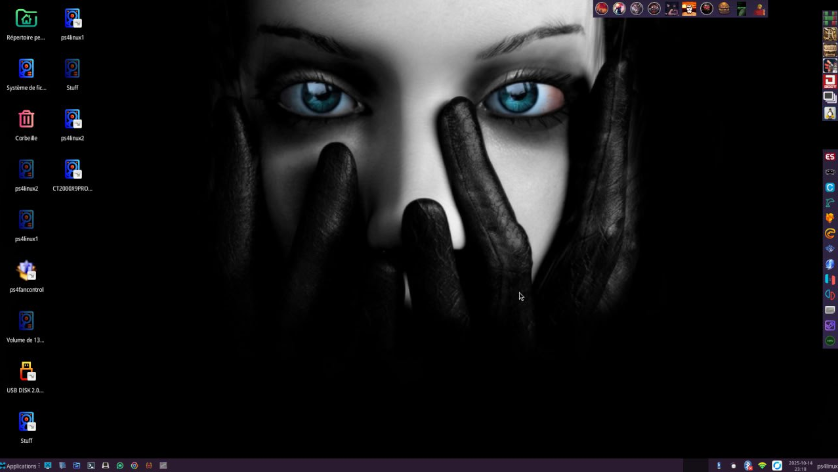

Debian Trixie : Une très grosse distribution
Debian Trixie , est une sauvegarde complète de mon système de dévellopement PS4
On y retrouve, tous les outils PS4, toutes les librairies installées pour les compilations, tous les émulateurs et plus encore
Livré avec le bureau XFCE l'archive ps4linux-Trixie-27-05-2026-full.tar.xz pèse 33.69 Giga, et nécéssite une partition de 140G minimum.
Description
- Mesa 26.0.2-devel
- Emulateurs installés et configurés
- Tous les outils PS4
- Et bien d'autres surprises
Le script mesa-build.py est fourni avec les patchs libdrm et mesa-26.x déjà appliqués.
Installation
sudo tar -xvJpf ps4linux-Trixie-27-05-2026-full.tar.xz -C /media/tux/ps4linux1 --numeric-ownerRemplacez tux par votre utilisateur et ps4linux1 par le label utilisé par votre initramfs.
Identifiants
Login et mot de passe : ps4linux
Mise a jour et fix
Comme sur toutes mes distributions, aucuns paquets n'est bloqués. Vous devez connaître le processe de mise a jour, avant de l'effectuer. Section tutoriels Mettre a jours ma distribution.
Depuis sa sortie en version béta, la distribution a évoluée, avec un fix bluetooth, wifi
.bashrc fix
J'avais oublié de placer ces lignes dans .bashrc après cette ligne :
export DISABLE_LAYER_AMD_SWITCHABLE_GRAPHICS_1=1ajouter ceci et enregistrer
export DOTNET_SYSTEM_GLOBALIZATION_INVARIANT=1
export OO_PS4_TOOLCHAIN='/home/ps4linux/PROJECT-PS4/Orbis/PS4Toolchain'
export PATH="$PATH:/home/ps4linux/PROJECT-PS4/Orbis/PS4Toolchain/bin/linux"Wine fix
Corruption de la configuration de wine, dans un terminal placer cette commande:
winebootWifi fix
Fix de la connexion wifi, plus aucunes déconnexions:Dans un terminal:
iw dev mlan0 get power_saveSi la réponse est Power save: on
sudo iw dev mlan0 set power_save offOn le rend permanent comme ceci:
sudo geany /etc/systemd/system/wifi-powersave-off.servicecopier/coller ceci:
[Unit]
Description=Disable WiFi power saving on mlan0
After=network-pre.target
[Service]
Type=oneshot
ExecStart=/sbin/iw dev mlan0 set power_save off
RemainAfterExit=yes
[Install]
WantedBy=multi-user.targetEnregistrer, On l'active, une fois. Après ce sera automatique:
sudo systemctl daemon-reload
sudo systemctl enable wifi-powersave-off.service
sudo systemctl start wifi-powersave-off.serviceMaintenant on désactive l'économisateur d'énergie de NetWorkManager:
sudo mkdir -p /etc/NetworkManager/conf.d
sudo geany /etc/NetworkManager/conf.d/wifi-powersave.confCopier/coller ceci dedans:
[connection]
wifi.powersave = 2Enregistrer, Relancer NetworkManager:
sudo systemctl restart NetworkManagerBluetooth fix
Suivre les instruction du readme, facile a mettre en place tous les fichiers sont fournis
Téléchargement
Vidéo de présentation
Vidéo de présentation
